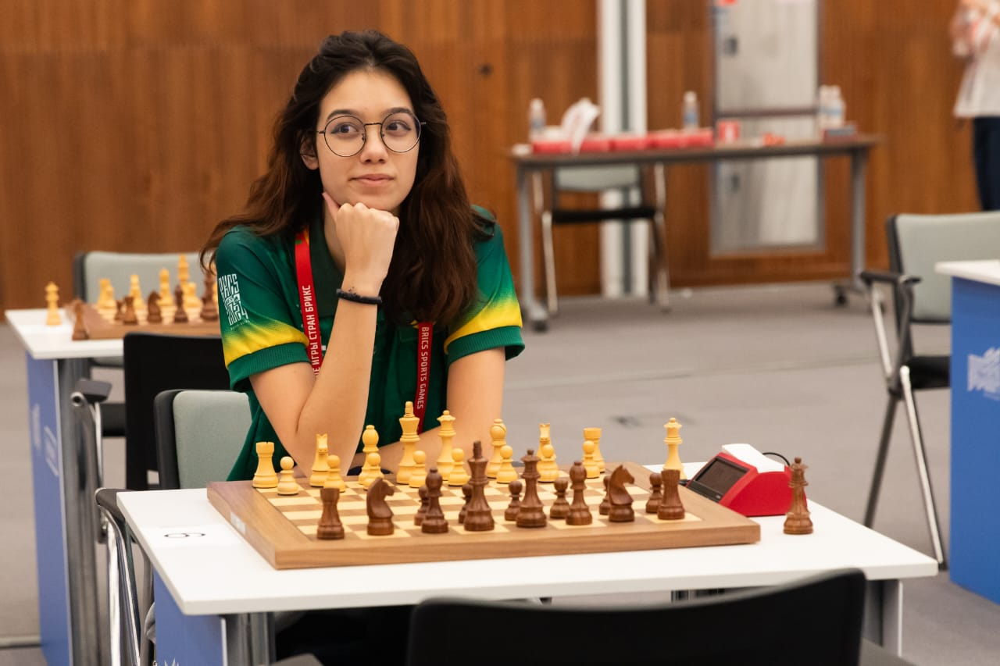

Olá, eu sou Isabella Conti
Treinadora e enxadrista focada em desenvolvimento com método e consistência.
O xadrez é a base do meu trabalho e da minha rotina. Em 2020 e 2021, representei a Olimpíada pelo Brasil, experiência que marcou minha trajetória como jogadora e como estudiosa do jogo.
Em 2023, fui campeã brasileira universitária. Atualmente, sou número 6 do Brasil e tenho rating FIDE de 2021.
Aqui eu compartilho minha forma de ensinar e os treinamentos que criei para quem quer evoluir com clareza, planejamento e acompanhamento de verdade.


O que você encontra por aqui
- Mentoria de xadrez em turma
- Aulas individuais
- Cursos gravados
- Cronograma personalizado
- Acompanhamento estratégico
- Estudo com clareza